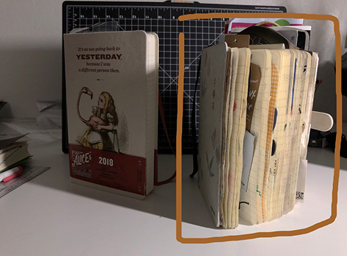

I don't like my handwriting and drawing style, so I collect all kinds of things (tickets, table paper, napkins, candy wrappers, etc.) and stick them into my scrapbook as my travel journal. I started this scrapbook since freshman, and now it is too full to close. When my friends come to visit me, I always share my traveling stories with them by looking at what I have collected inside my book.
Click on different images at the main page and see the story behind them.
I also have some empty pages in my scrapbook. The emptiness also means something.